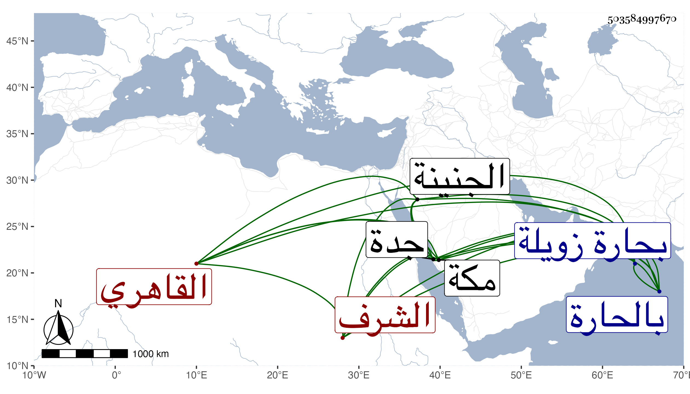

0902Sakhawi.DawLamic.ITO20230111-ara1.EIS1600.503584997670
Biography ID: 503584997670
975
يحيى بن عبد الله الشرف القاهري ويعرف بالمزين . ولد قريب الثلاثين وثمانمائة بحارة زويلة ونشأ فحفظ القرآن وجوده على المقرئ على المخبزي الضرير بل تلا عليه لنافع وأبي عمرو وتدرب في الجراح والجبر بالجمال بن عبد الحق وبرع في ذلك بل فاق فيه وخدم به الأكابر وغيرهم وكذا تميز في الحساب والديونة والمباشرات ونحوها مع مزيد عقل ووفور أدب فترقى وتمول سيما وقد خدم ابن الأشرف إينال الملقب بالمؤيد وعمل صيرفيا عنده ثم خدم الظاهر خشقدم في عارض حصل له فبرأ منه وخلع عليه واستقر به في رياسة الجرائحيين والمجبرين شريكا لأبي الخير النحاس ، وحج مرارا منها في خدمة الأشرف قايتباي وجاور غير مرة وكذا سافر في عدة تجاريد مع الأمير أزبك والدوادار يشبك من مهدي وغيرهم واختص بالمذكورين بل عظم اختصاصه بثانيهما وتزايدت رعاية جانبه أيامه في متاجره وغيرها وقرره في وظائف دينية كالتصوف بالأشرفية والصلاحية والبيبرسية وغيرها وابتنى دارا هائلة بالحارة وموضعا آخر بالجنينة يشتمل على ربع ووكالة ولازال يترقى مالا وحشمة مع بر وإحسان وميل للخير حتى مات الدوادار فتعب خاطره لعلمه بتلفت السلطان مع تكرر خدمته له سيما حين ذكر بوديعة لصديقه ابن كاتب غريب فاستأذنه في السفر ليحج بولده فأذن له وسافر في موسم سنة سبع وثمانين فحج وجاور ، ولم يلبث أن توعك في جدة فحمل إلى مكة فتزايد ضعفه إلى أن مات في حياة أبيه في آخر يوم الخميس عاشر رجب من التي تليها ودفن من الغد وخلف ولدا حنفيا وأثكل في حياته ولدا شافعيا عرض كل منهما علي بل قرأ المتخلف علي في البخاري . وبالجملة فكان من محاسن بني حرفته عفا الله عنه .
